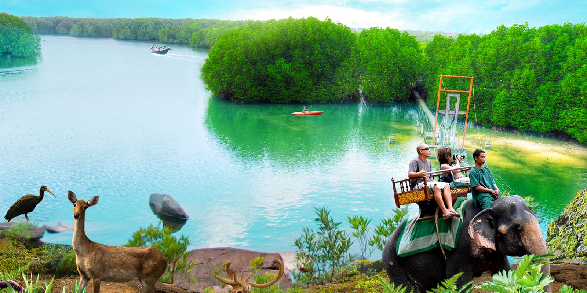

Located at the southwestern tip of the country near the mouth of the Kah Bpow River in Smach Mean Chey district on the Gulf of Thailand, the city is only 10 kilometers from the Thai border. From here, tourists now have access to the border of Thailand by a newly constructed bridge reputed to be the longest in Cambodia. The 1900 meter long Thai-Cambodian border-bridge was completed at a cost of US$7.2 million dollars. With the bridge and the upgrading of the road to the national highway plus the building of several casinos near the border, the town has developed into a more popular tourist destination. Besides the casinos, there is a zoo and many pristine islands, mountains, jungles, rivers, waterfalls and mangrove forest which offer the tourist tons in terms of eco-tourism.

The Peam Krasop Mangroves are Asia’s largest and Koh Kong beaches are
reputed to be one of the best beaches in Southeast Asia.
In 2008, the Royal Government of Cambodia planed an area of 360 square
kilometers to construct the Cambodia coast tourism zone on the southwest
of Koh Kong Province, the holiday resort by now have the biggest
development area and investment scale in Cambodia.